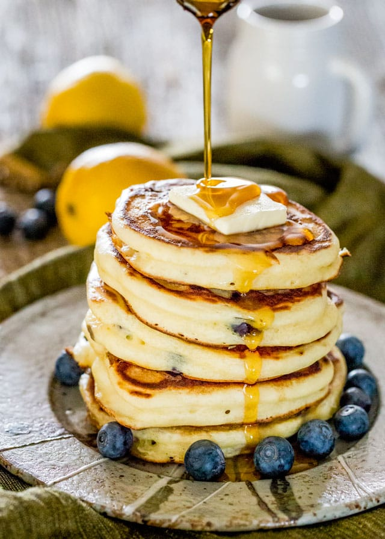

Ricotta Pancakes

A fluffy pancake made with ricotta
The fluffiest ricotta pancakes you'll ever eat.
Ingredients
- 1 1/2 cups unbleached all-purpose flour
- 2 tsp baking powder
- 1/4 tsp baking soda
- 2 tbsp granulated sugar
- 2 tsp fine sea salt
- Zest of 1 lemon
- 2 large eggs
- 1 cup whole milk
- 1 tbsp neutral-tasting oil
- 1 cup ricotta
- Unsalted butter
- Topping(s) of choice
Steps
- In a medium bowl, whisk together the flour, baking powder, baking soda, sugar, salt, and lemon zest until thoroughly combined.
- In a separate medium bowl, whisk the eggs. Then whisk in the milk, oil, and ricotta until you have a homogeneous mixture.
- Add the ricotta-milk mixture to the flour mixture, and whisk until combined. Lumps are okay. Let the mixture rest for 5 minutes.
- Heat a large nonstick skillet over medium heat. Lightly grease the pan with butter or spray lightly with cooking spray.
- Once the pan is hot, add butter to the pan in 1/4-cup measurements, spacing them far enough apart to avoid them forming together.
- Cook pancakes for 2 to 3 minutes, or until golden brown on the bottom and beginning to bubble on the top. Flip and cook for 2-3 minutes more. Transfer to plate, repeat, and enjoy.